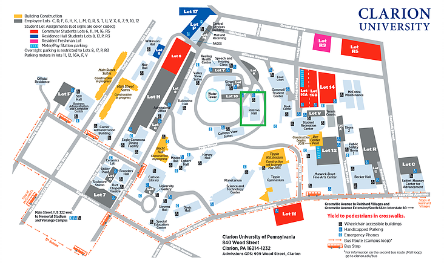

TechFloor
Ralston Hall, Clarion University
840 Wood Street
Clarion, PA 16214
WHERE TO FIND US
- We are located in Ralston Hall, right between Gemmell and Givan.
It is squared in green on the map. There are signs in the building to help you find us.
- Entering Ralston through the main entrance: go left and down the hallway until you see
a staircase on your right, go down one flight of stairs, go left and we’re the first door on your left.
- Entering Ralston through the basement entrance: go straight until the end of the hallway,
go up the stairs until the next floor, go left, and we’re the first door on your left.